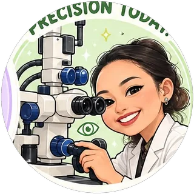
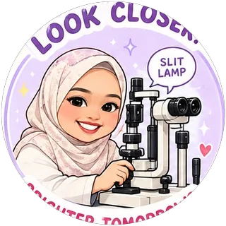
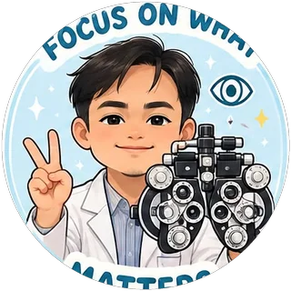

About MataKitani
MataKitani: eye health for every generation.
Kesihatan Mata untuk Setiap Generasi.
MataKitani is a free website that explains health conditions in simple, everyday language, in English and Bahasa Melayu Brunei. It is written by doctors in Brunei for the people of Brunei.
Our vision and mission
Our vision
To empower every individual in Brunei Darussalam with accessible, accurate, and culturally relevant health information, for a healthier and more informed nation.
Our mission
MataKitani is dedicated to improving health literacy across Brunei by providing culturally appropriate, evidence-based and user-friendly health information. Through digital platforms, community outreach and collaboration with healthcare professionals, we aim to promote informed health choices, disease prevention and community well-being.
Why we started
Health literacy is the ability to find, understand and use health information. In Brunei, many people prefer to read in Malay, yet most reliable health information online is in English, written for other countries, and full of medical terms.
Speaking at the 2nd ASEAN Digital Public Health Conference in 2022, the Minister of Health said:
"Health literacy is still quite low in the country, and it is hoped that digitisation of public health information will help to 'nudge' the public to take better care of their health."
A local study at RIPAS Hospital found that 69.5% of patients with diabetes had inadequate knowledge of their condition. MataKitani aims to help close that gap, starting with the eye.
Collaborators
Initiative Lead and Supervisor
Chief Editor and Designer
Head Reviewers
- Dr Helena HurairahConsultant Ophthalmologist

Dr Noor Affizan RahmanConsultant Ophthalmologist
Co-Authors
Ophthalmology Residents, Brunei Eye Centre, Ministry of Health

Dr Nur Nadiah JeludinOphthalmology Resident- Dr Farhana AriffinOphthalmology Resident
- Dr Amirah SophianOphthalmology Resident
- Dr Abraham LimOphthalmology Resident
- Dr Atiqah BakarOphthalmology Resident
- Dr Haziq Aziz ShamriOphthalmology Resident
- Dr Aida AjiOphthalmology Resident

Dr Faris AideOphthalmology Resident